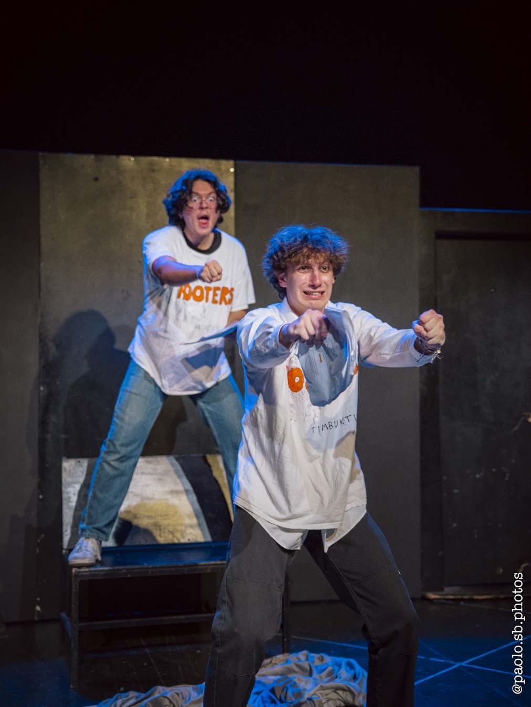

Tumbleweed Country
Directed by Andrew Zhang
Cast
- Mason Davis · George
- Jake Igelman · Mayor Reginald
- Can Basoglu & Hoonor Kaur · Ensemble/Tumbleweeds
- Devon Rydell · Stage Directions
In this project, I'm curious about how stage reading can stand out as its own form instead of a replacement. I see the narrator as the magician: one who makes things happen on the stage, and more importantly, in your mind, using their words.
